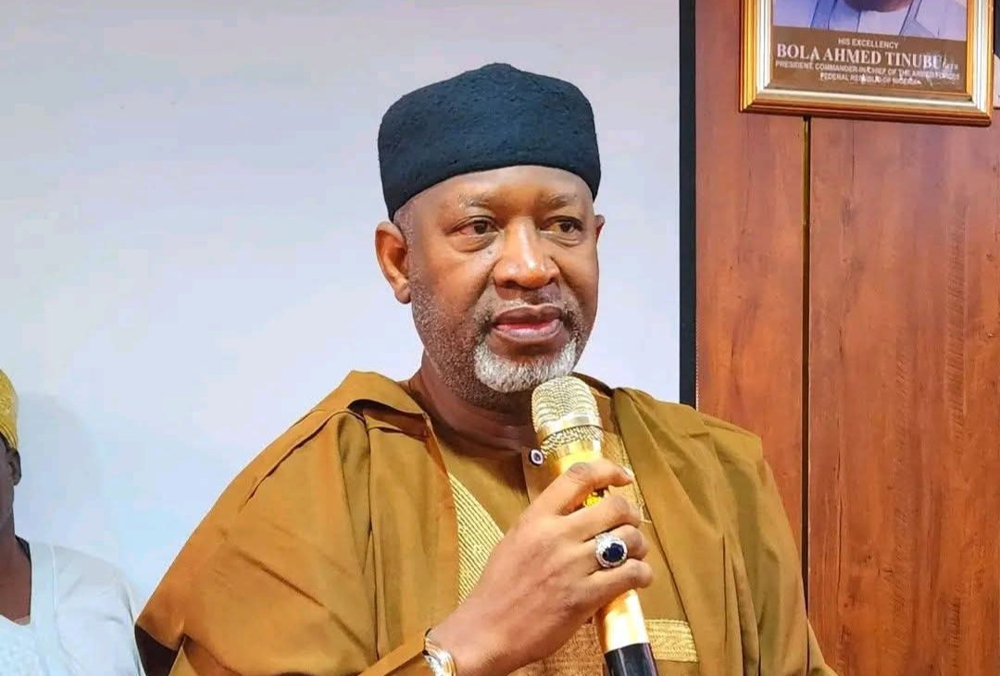

Top Chinese bus manufacturer plans to establish plant in Nigeria

President Bola Tinubu has welcomed Yutong’s plans to establish a compressed natural gas (CNG) bus assembly plant in Nigeria. The investment follows an invitation to the Chinese manufacturer to support the expansion of affordable mass transportation. An agreement with the Presidential Initiative on Compressed Natural Gas and Electric Vehicles is scheduled to be signed in Lagos on November 19, 2026.
Under the agreement, Yutong will supply an initial 300 CNG-powered buses. The first 100 are expected to arrive in Lagos by the end of December 2026, with subsequent vehicles to be assembled in Nigeria by YP Automobiles Bus Assembly at the former Leyland Automotive plant in Ibadan, Oyo State. The planned local assembly is intended to revive industrial capacity, reduce reliance on imported vehicles and create jobs for engineers, technicians and other workers.
The investment is linked to the National Affordable CNG Transit Programme, which is being developed with state governments. It targets fare reductions of approximately 40 per cent on participating routes, in line with the administration’s Renewed Hope Agenda 2.0 for 2027–2031. Tinubu has said that lower operating costs for CNG vehicles should result in lower passenger fares, with the programme’s success judged by the savings it delivers to Nigerians who rely on commercial transport.
The planned bus rollout comes alongside efforts to expand CNG refuelling capacity. The source material cites infrastructure work by the CNG and electric vehicle initiative, the Midstream and Downstream Gas Infrastructure Fund and private investors, including the deployment of mobile refuelling units and a directive for 2,000 additional refuelling units nationwide. Yutong sold 49,518 buses globally in 2025 and has experience supporting local assembly and public transport projects in several countries. Tinubu said the Nigerian investment could also support technology transfer and strengthen the country’s automotive industry.
Source: Premium Times